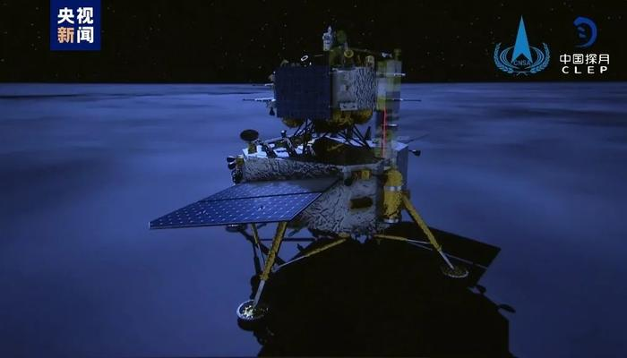
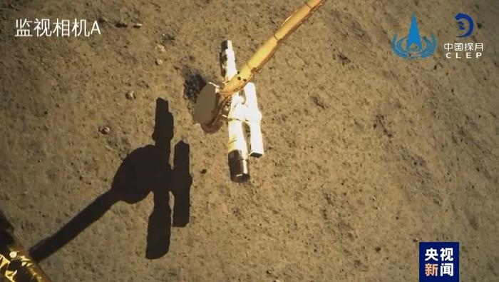
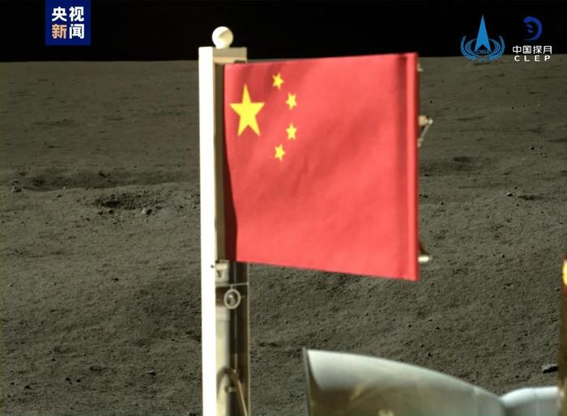
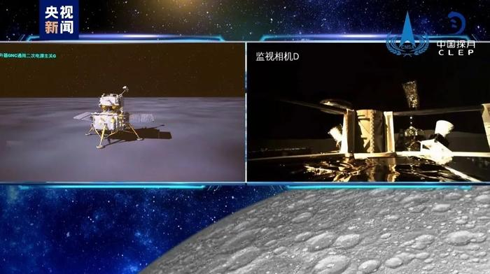

记者从国家航天局获悉，6月4日7时38分，嫦娥六号上升器携带月球样品自月球背面起飞，3000N发动机工作约6分钟后，成功将上升器送入预定环月轨道。

6月2日至3日，嫦娥六号顺利完成在月球背面南极-艾特肯盆地的智能快速采样，并按预定形式将珍贵的月球背面样品封装存放在上升器携带的贮存装置中。采样和封装过程中，科研人员在地面实验室，根据鹊桥二号中继星传回的探测器数据，对采样区的地理模型进行仿真并模拟采样，为采样决策和各环节操作提供重要支持。
智能采样是嫦娥六号任务的核心关键环节之一，探测器经受住了月背高温考验，通过钻具钻取和机械臂表取两种方式，分别采集了月球样品，实现了多点、多样化自动采样。

嫦娥六号着陆器配置的降落相机、全景相机、月壤结构探测仪、月球矿物光谱分析仪等多种有效载荷正常开机，按计划开展了科学探测，在月表形貌及矿物组分探测与研究、月球浅层结构探测等科学探测任务中发挥重要作用。探测器钻取采样前，月壤结构探测仪对采样区地下月壤结构进行了分析判断，为采样提供了数据参考。
嫦娥六号着陆器携带的欧空局月表负离子分析仪、法国月球氡气探测仪等国际载荷工作正常，开展了相应科学探测任务。其中，法国月球氡气探测仪在地月转移、环月阶段和月面工作段均进行了开机工作；欧空局月表负离子分析仪于月面工作段进行了开机工作。安装在着陆器顶部的意大利激光角反射器成为月球背面可用于距离测量的位置控制点。
表取完成后，嫦娥六号着陆器携带的五星红旗在月球背面成功展开。这是中国首次在月球背面独立动态展示国旗。该国旗由新型复合材料和特殊工艺制作而成。由于落月位置不同，嫦娥六号国旗展示系统在嫦娥五号任务基础上进行了适应性改进。

与地面起飞相比，嫦娥六号上升器没有固定的发射塔架系统，而是将着陆器作为“临时塔架”。与嫦娥五号月面起飞相比，嫦娥六号从月球背面起飞，无法直接得到地面测控支持，而需要在鹊桥二号中继星辅助下，借助自身携带的特殊敏感器实现自主定位、定姿，工程实施难度更大。嫦娥六号上升器点火起飞后，先后经历垂直上升、姿态调整和轨道射入三个阶段，顺利进入了预定环月飞行轨道。
后续，上升器将与在环月轨道上等待的轨道器和返回器组合体进行月球轨道的交会对接，并将月球样品转移到返回器中；轨道器和返回器组合体将环月飞行，等待合适的返回时机进行月地转移，在地球附近返回器将携带月球样品再入大气层，计划降落在内蒙古四子王旗着陆场。

5月3日，嫦娥六号探测器发射升空，开启奔月之旅，历经近月制动、着陆器与上升器组合体和轨道器与返回器组合体分离，于6月2日成功着陆在月球背面南极-艾特肯盆地预选着陆区。